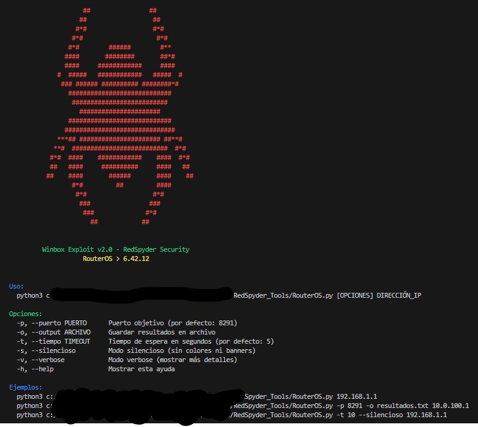

Descripción
Herramienta de RedSpyder para extraer usuarios y contraseñas de dispositivos MikroTik vulnerables con RouterOS ≤ 6.42.12 mediante el servicio Winbox.
Categoría: Exploits → Winbox / RouterOS
Requisitos: Python 3, conexión de red al puerto 8291 del objetivo.

Uso básico
python3 winbox_exploit_v2.py [OPCIONES] DIRECCIÓN_IP
Opciones:
-p, --puerto PUERTO Puerto objetivo (por defecto: 8291)
-o, --output ARCHIVO Guardar resultados en archivo
-t, --tiempo TIMEOUT Tiempo de espera en segundos (por defecto: 5)
-s, --silencioso Modo silencioso (sin colores ni banners)
-v, --verbose Modo verbose (mostrar más detalles)
-h, --help Mostrar esta ayuda
Ejemplo:
python3 winbox_exploit_v2.py 192.168.1.1
python3 winbox_exploit_v2.py -p 8291 -o resultados.txt 10.0.0.5
python3 winbox_exploit_v2.py -t 10 --silencioso 192.168.1.1